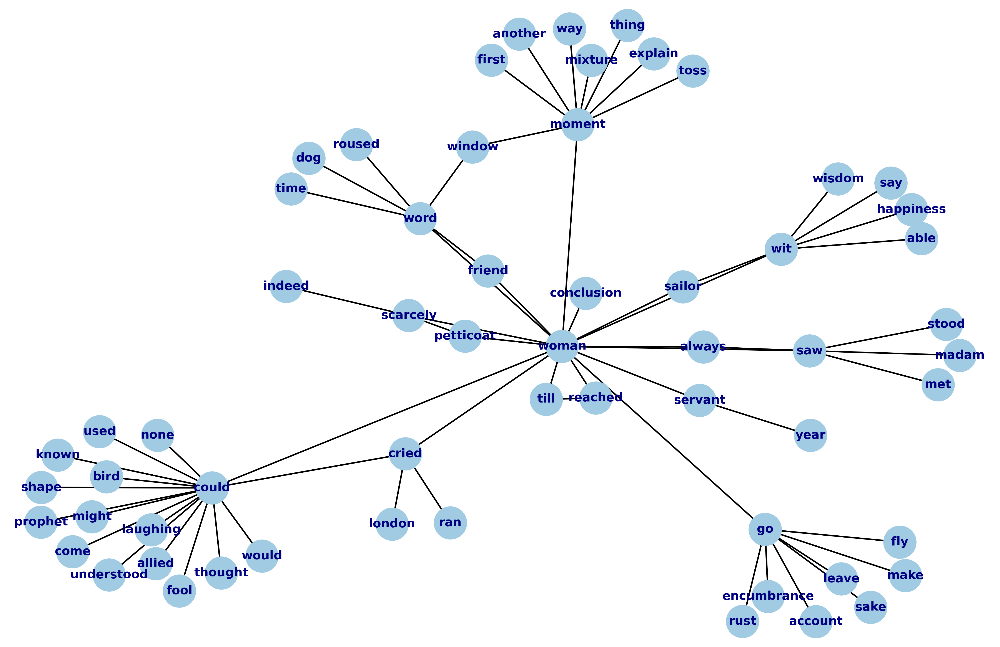

In recent years, practitioners of distant reading have been grappling with the problem of quantifying gender and sexuality, among other aspects of minority identity. My project intervenes in this debate by exploring one of the stickier aspects of distant reading--reproducibility. I trace a genealogy of reproducibility from distant reading’s inception in Franco Moretti’s call for a “falsifiable criticism” to more recent experiments in which researchers “reproduce” their assumptions about social categories in the results of their analysis.
Rather than condemn the reproducible, this project unpacks its radical potential by reworking it to engage with Judith Butler’s concept of performativity. Bringing Butler’s foundational ideas about “performative citation” from Queer Theory to distant reading, I propose a methodology that achieves displacement through repetition, subversion through iteration, and resistance from within the flattening processes of quantification. This method illustrates how the iterative practice of analyzing text computationally can surface new textual structures and resignify elements of that text.
I demonstrate this critical method with an analysis of Virginia Woolf's text, Orlando: A Biography (1928) to explore how the terms "man" and "woman" can be re-signified to multiply our already complex understanding of gender in that text. This method harnesses the reductions of reproducibility within text analytical methods in order to advance the study of queer identity in Queer Studies.
The image below visualizes the words associated with "woman" in the text. Click here to see the full Python code for this text analysis.
This is filler text, just to make some space here because I do not understand Bootstrap flexboxes
Susan Brown and Laura Mandell. “The Identity Issue,” Cultural Analytics, Feb 13, 2018.
Moretti, Franco. "The Soul and the Harpy." Signs Taken For Wonders: On the Sociology of Literary Forms, trad. David Forgacs, New York, Verso, 1983. p. 21.
Butler, Judith. Bodies That Matter. 1995. p. 18.